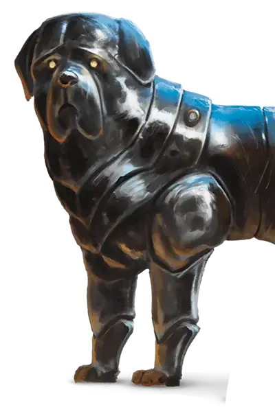

Стальной защитник
Steel Defender
Средний Конструкт

Класс Доспеха 15 (природный доспех)
Хиты 2 + ваш модификатор Интеллекта + пятикратный уровень изобретателя (количество костей хитов защитника [к8] равно уровню изобретателя)
Скорость 40 футов
| мод | спас | ||
|---|---|---|---|
| СИЛ | 14 | +2 | +2 |
| ЛОВ | 12 | +1 | +1 |
| ТЕЛ | 14 | +2 | +2 |
| мод | спас | ||
|---|---|---|---|
| ИНТ | 4 | −3 | −3 |
| МДР | 10 | +0 | +0 |
| ХАР | 6 | −2 | −2 |
Навыки Атлетика +2, Восприятие +0
Иммунитет к урону яд
Иммунитет к состояниям отравление, очарование, истощение
Чувства тёмное зрение 60 футов, пассивное Восприятие 10 (+БМ×2)
Языки понимает языки, на которых вы говорите
Опасность —
Особенности
Бдительный. . Защитника нельзя застать врасплох.
Действия
Исполненный силы удар. Рукопашная атака оружием: ваш модификатор броска атаки заклинанием для попадания, досягаемость 5 футов, одна видимая цель. Попадание: 1к8 + БМ урона силовым полем.
Ремонт (3/день). . Магические механизмы внутри защитника способны восстановить 2к8 + БМ хитов ему, одному Конструкту или одному объекту в 5 футах от защитника.
Реакции
Отражение атаки. . Защитник создаёт помеху к броску атаки одного существа, которое он может видеть в пределах 5 футов, при условии, что эта атака совершается не по защитнику.